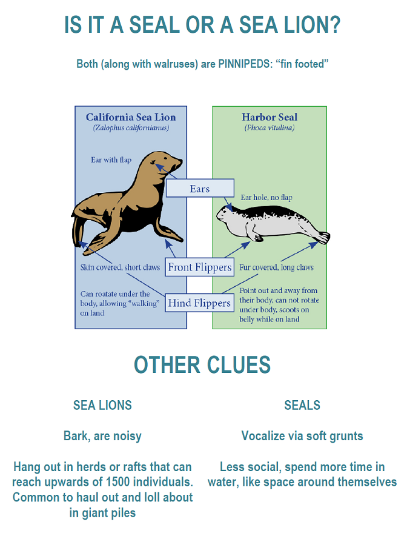

Let's compare two kinds of animals that we often see at Point Lobos.

Visit the Info Station to see that sea lions and harbor seals have similar teeth. They both grab fish with their teeth and swallow them.
The teeth of a sea otter are different. Sea otters eat shellfish, and they chew their food.